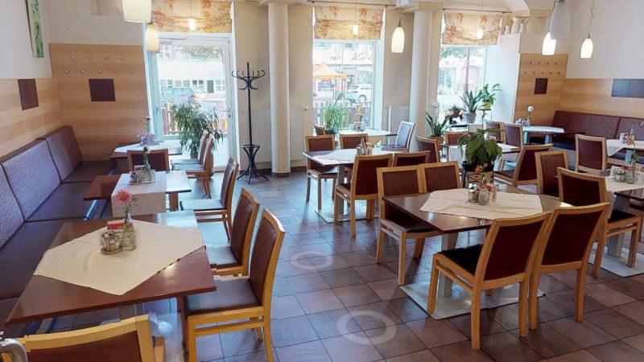
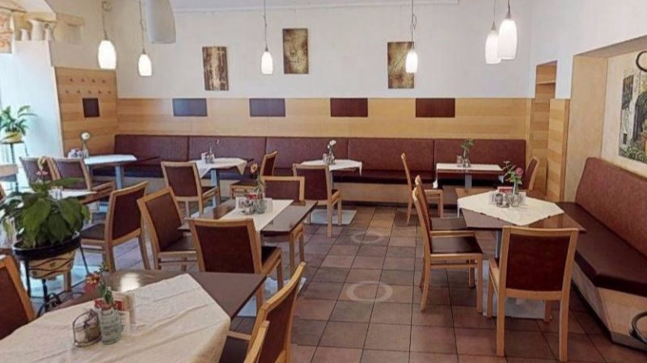
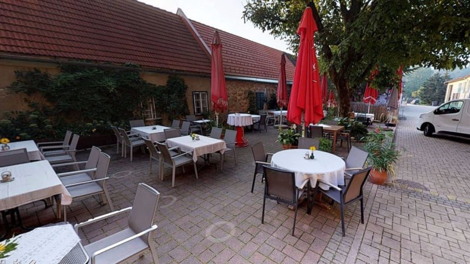

Restaurant
Platz für ca. 60 Personen
Der Hauptgastraum für Mittagstisch, Familienessen, Reise- und Busgruppen.
01 Gasthaus
Vor rund 400 Jahren erbaut, seit beinahe 120 Jahren im Familienbesitz: In der vierten Generation sind wir Gastwirte und Fleischer – und seit jeher war uns das Wohl und das Wohlfühlen unserer Gäste ein wichtiges Anliegen.

02 Räume
Restaurant
Der Hauptgastraum für Mittagstisch, Familienessen, Reise- und Busgruppen.
Stüberl
Für geschlossene Gesellschaften, Geburtstage und Firmenrunden.
Keller
Im Keller lässt sich in angenehmer Atmosphäre feiern – Erstkommunion, Firmung, Hochzeit.
Gastgarten
Mit Blick auf den schönen Auwald – der Platz für lange Mittage im Sommer.


03 Öffnungszeiten
| Montag bis Freitag | 8.00 – 15.00 Uhr |
|---|---|
| Küchenzeiten | 8.00 – 14.30 Uhr |
| Samstag, Sonntag, Feiertag | geschlossen |
| Montag bis Freitag | 7.00 – 15.00 Uhr |
|---|---|
| Samstag | 7.00 – 12.00 Uhr |
| Sonntag | geschlossen |
Reise- und Busgruppen
Auch Reisegruppen und Busgruppen sind gerne bei uns willkommen. Wir bitten um Voranmeldung; auf Wunsch stellen wir eine eigene Buskarte zusammen.
Anfragen an +43 3472 2109 oder über das Formular unten.
AMA-Gastrosiegel
Wir sind seit einigen Jahren Mitglied beim AMA-Gastrosiegel. Nähere Informationen dazu unter ama-gastrosiegel.at.
04 Neu: Online-Reservierung
Bisher lief jede Reservierung über Telefon oder Facebook. Hier geht sie direkt ins Haus – auch für Gruppen und die Buskarte.